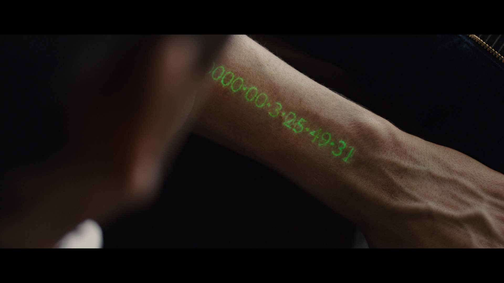
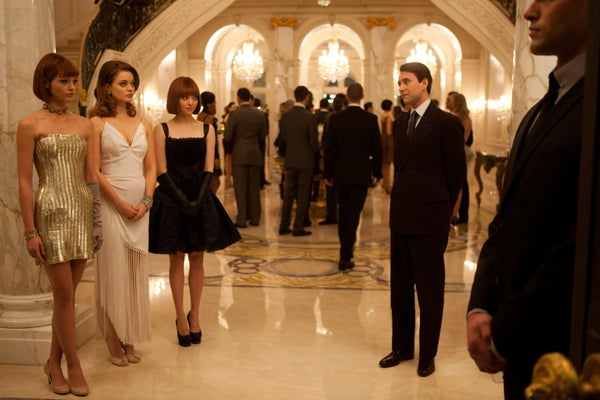

Zamana Karşı
Yaşam süresinin para olduğu bir dünyada, bir gün daha yaşamak bile sınıfsal bir ayrıcalıktır.
Film, zamanı bir metafor olmaktan çıkarıp doğrudan ekonomik güce dönüştürür. Birinin sonsuzluğu başkasının yarınından çalındığında özgürlük mümkün müdür?
Zamana Karşı
Filmin konusu
25 yaşından sonra insanların kalan ömürlerini çalışarak kazandığı bir gelecekte Will Salas, kendisine bırakılan zaman mirasıyla sistemin hedefi olur.
- IMDb
- 6.7 / 10
- Süre
- 1 sa 49 dk
- Oyuncular
- Justin Timberlake · Amanda Seyfried · Cillian Murphy

Zamanı riske atmak
Will masaya para değil, doğrudan yaşamını koyar.

Ölümsüzlerin bölgesi
Zenginlik burada gösteriş değil, tükenmeyen yarınlardır.

Konforun dışına bakmak
Sylvia, sahip olduğu zamanın başkalarının kaybı olduğunu görür.

Sınırı aşmak
İki bölge arasındaki geçiş, eşitsizliğin görünür çizgisidir.

Takip
Zaman muhafızları düzenin bozulmasını engellemeye çalışır.

Yeniden paylaşmak
Özgürlük, zamanı biriktirmek yerine dolaşıma sokmakla başlar.